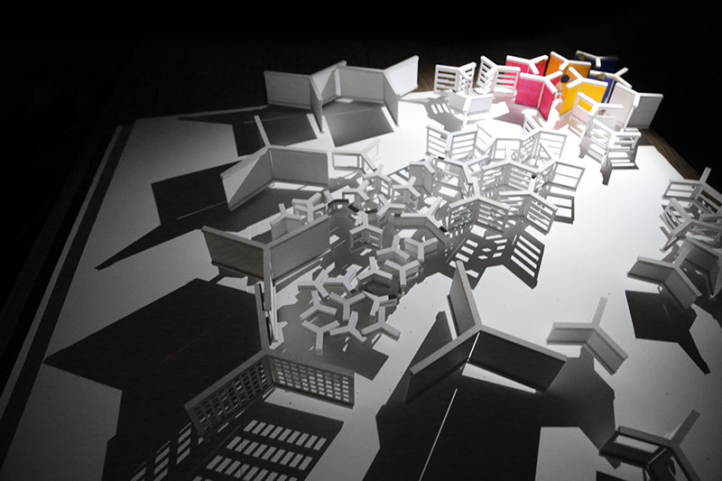
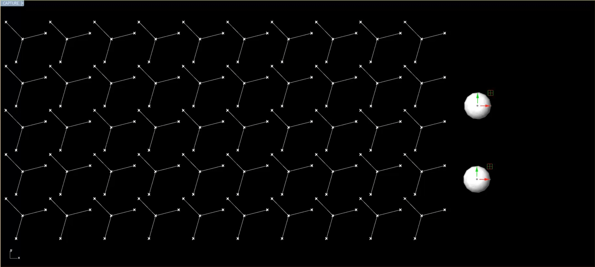
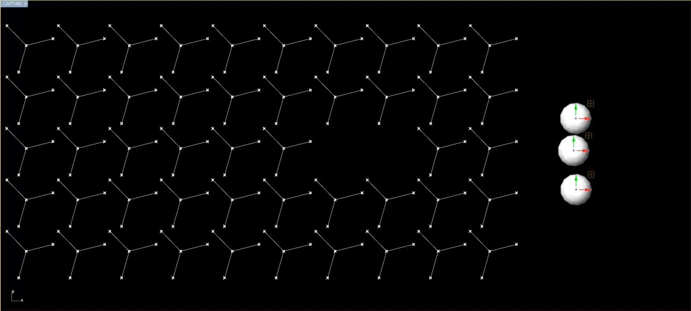
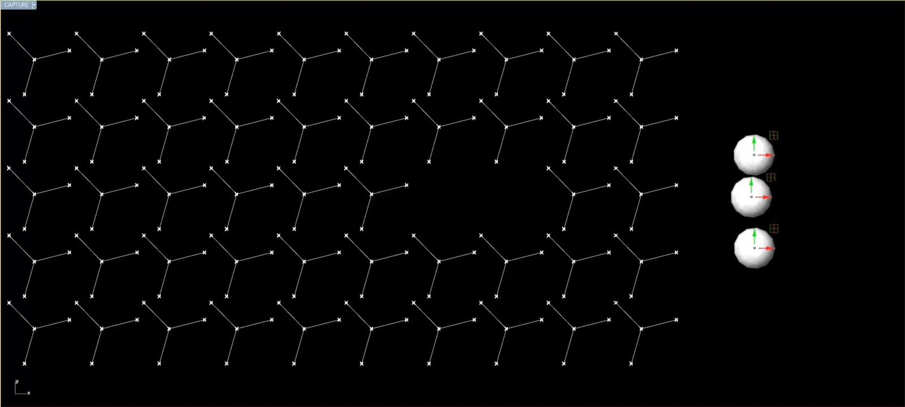

Abstract
This thesis seeks to rejuvenate the role of the playground within the urban fabric by reflecting on its importance and value in a person’s development. The playground must be upheld as an important architectural design opportunity for creating cases where agency and culture can be expressed.
The American playground originally served as a place not only for creativity and risk-taking, but also for learning about agency and manipulating one’s environment. However, in recent decades, the playground has prioritized commercialization and safety regulations, and the original effect a child could have over their physical environment has been lost.
The designer’s role in rejuvenating the American playground cannot only be to bring back risk and creativity, but to encompass all that one learns in a playground, including cognitive skills and social growth. Play encourages mediation and collaboration when manipulating the physical world and it becomes the designer’s obligation to embed these skills in the playground of a new generation.
Table of Contents
Analysis
Play as Place
Play as Growth
Play as Product
Agency in Play
Case Study
Design in Play
Design
The Component
Siting
The Characters
Virtual Response
Speculative Engagement
Play As Place
A Brief History of the Playground
To begin to understand the role of the playground in an American context, one must first look at its history throughout time.
While any place could potentially be labeled as a “play-ground” as long as there are children playing in it, the formal declaration of a playground began as a “sand garden”. This concept was originally formalized in Berlin, Germany, where sand from beaches was brought to a dense city. The concept was very popular because it allowed for children to shape the ground into whatever form they pleased and let creativity flow free. This inspired American visitors to bring this idea to Boston, in the United States. However, it was in the United States that the playground went through several transformations that have led to the fixed notion of the playground as it is viewed today.
The American Playground first began as a sand garden but quickly acquired formal structures. The Playground Organization Of America, founded in 1906, helped in creating official playground equipment and spreading the concept of these play objects throughout the nation.
Things such as the slide, the see-saw, the swing, etc. are common play objects that do not have a specific invention date. However, it was through the formalization of the playground that they too were formalized into what is called the “model playground”. Instead of sand, where a child would be able to create whatever they pleased, objects with specific purposes were placed, unable to be used in any way other than their official purpose.
The model playground was built in many cities other than Boston quickly and swiftly, as parents were happy to have toys for children to play with outside. They were made of steel, chains, and tires. However, construction of model playgrounds came to a halt during World War I, which was then followed by the Great Depression, and then World War II.
This gap in playground construction gave way to what was known as the “adventure playground”. Often, empty lots in cities were assigned as adventure playgrounds, where scraps of metal, old tires, and planks of wood were thrown into for children to play with. The adventure playground, like the sand gardens before it, let children create whatever they pleased and form constructions only limited by their imagination, all with very little supervision.
Once the economy improved in the United States, the “model playground” returned and went through two transformations that will be the focus of this investigation. The “novelty playground” and the “standardized playground” of the 1950s and 1970s, respectively.
The Novelty Playground
The “novelty playground” refers to a trend in American playgrounds to remove the necessity for a child to imagine what they want out of a playground structure, and instead do this step for them. Instead of an elevated structure where a child can impose their creativity, the structure might be shaped, colored, and decorated in the way of a spaceship, demanding that it must be a spaceship from beginning to end. A roof may be shaped like a popular cartoon mouse, or a clown’s head, but may not be declared as anything other than what it already claims to be.
This became very popular for commercial purposes and playgrounds became marketing devices for toy brands and television shows. Unfortunately, this began to remove the potential for a child to express their creativity within a playground.
The Standardized Playground
Meanwhile, the “standardized playground” removed another important aspect of playgrounds: Risk. Families became increasingly concerned that their children would be getting hurt and injured in a playground setting, and regulations were put in place to keep children safe.
With the arrival of the standardized playground, playgrounds across America began to be built out of plastic with rounded edges, rubber, and wood-chips for ground cover. These precautions led to playground becoming places where most things were fixed, unbreakable, and unchangeable. The risk of the playground was apparently removed, but with that, the control and power that a child had over a playground also left.
Play as Growth
Theory of Play
The largest issue with the standardization of playgrounds is that this did not prevent children from being injured. In fact, children will always seek to get injured, regardless of where they are playing. By nature, they seek to find the highest point from which to jump, run at the fastest speed before tripping and falling, and crash onto one another as roughly as they can.
This begs the question of why children seek out these dangerous activities. Additionally, it makes one wonder of the value of a playground where its purpose will be for children to find ways of getting injured. The answer lies in the theory of human development.
Human beings develop physically, cognitively, and socially the most from around the age of 4 to around the age of 8. Additionally, this development is tied closely to the way that they play.
While children begin to learn how to conceptualize and use their intuition, they also learn how to role-play during games and play with other children. Once a child is able to make concrete operations and organize thoughts, they are also able to play games with rules and adjustments.
“ In play, a child is always higher than his average age, higher than his usual everyday behaviour: he is in play as if a head above himself. The play contains, in a condensed way, as if the focus of a magnifying glass, all tendencies of development; it is as if the child in play tries to accomplish a jump above the level of his ordinary behaviour.
The relationship of play to development should be compared with that of teaching - learning to development. Changes of needs and consciousness of a more general kind lie behind the play. Play is the resource of development and it creates the zone of nearest development. Action in the imaginary field, in the imagined situation, construction of voluntary intention, of the formation of the life-plan, will motives - this all emerges in play. ”
Lev Vygotsky, developmental psychologist

Playground as Tool for Development
The playground is not simply a tool for physical development, but also an effective location for cognitive and social development. Currently, typical playground equipment in the United States, such as slides and swings, serve as effective tools for physical development and the advancement of motor skills, but do not allow for more rounded development of a child.
The landscape architect, M. Paul Friedberg, acknowledged that play allows for children to develop physically, cognitively, and socially. He analyzed typical playground equipment in America and summarized the aspects that each piece of equipment best helps at developing. While this was not an exact science, it was particularly interesting to see him declare that, in his eyes, play-tools such as sand and water -- while not particularly effective for physical activities such as hanging and swinging -- were very good for cognitive and social activities. This calls back to the free-form creativity of sand gardens from early playground constructions and makes one wonder if there is a way to bring all three kinds of development into playground equipment design.
Play as Product
Playground as Anonymously Modular
While playground equipment is inherently not a bad tool for development -- as shown in its positive effect on motor skills and physical growth -- it inhibits creativity in its specificity due to its lack of flexibility.
Most of the time, playground equipment is stiff and unmovable -- yet designed modularly with the same equipment time and time again -- all by an anonymous architect. This makes one wonder: Who is deciding where each playground equipment goes and with what prejudice?

Playground as Commercial Industry
Playground equipment is relatively costly and is ruled by specific brands that have cornered the playground market. Additionally, there is a branch of government in the Consumer Product Safety Commission that makes sure that one abides by playground safety rules. Then, there is also a specific profession for regulating playground safety. The Certified Playground Inspector places his stamp of approval before a playground is open to the public, even though these safety regulations might be futile.
Agency in Play
Design Without Agency
Social media in the western world has placed a great deal of attention on individual people. From movie stars to YouTube sensations, there is a strong focus on an individual’s brand. In the same vein, the field of architecture has followed suit with the rise of the “star-chitect”.
The 1949 film “The Fountainhead” portrays a strong-headed, stubborn architect who would rather die than to have his artistic vision tarnished by compromise or outside meddling. The “star-chitect” today has a specific style symbolic of his established “brand”. The star-chitect’s artful creation is built behind solid walls, and the final product is photographed without activity so as to not deter from the purity of the architectural concept.
With this in mind, it is very unfortunate to think that architectural design places such high importance on the designer, and so little importance on the user.
Playground Without Agency
The direction of architectural design is paralleled in playground design. Many times, sculptural playgrounds -- often designed by architects -- do not take the user into consideration, and instead focus on the designer’s stylistic preference or design statement.
This becomes an issue when the concept of agency is put into question. A child learns cognitive and social skills through play and, by extension, learns about their own place in a community. They learn about the agency that they have over their environment and how much they can do to affect it. This becomes problematic when a playground does not allow one to manipulate it, and when one’s cultural environment does not have an impact on the design of the playground whatsoever. The generic, standardized American playground ignores cultural identity of a site, the potential for editing by the user, and the possibility for it to change based on the user’s needs.
These problems are being tackled in architectural design today, and it is imperative that they also be approached in playground design as well. Playgrounds are tools for development during an important period in a person’s life, and must be seen as possible sites of development. It is possible that a playground can become a place where one learns to understand their own culture and agency through the effect that they have on a playground. This could, potentially, pave the way for the same type of understanding in the future, where one’s effect on their environment will mold entire civilizations.
“Architecture has swelled beyond all limits. The profession has reached a fever pitch, culminating in the emergence of today’s global architect. This new professional wanted to be free from the everyday environment and its traditions, constraints, and limitations. From now on, his focus was on innovations and a new way of building. [...] After Ledoux, after Le Corbusier, after Howard Roark, after the ascension of the architect to near-mythic status, there is no reason for a creator to be fettered. Why should he be?”
Carlo Ratti, architect and professor
“With the idea of change comes the idea of the child’s doing the modification himself - the playground as a product of the child, not a ready-made design for the child. Every child needs to express himself and have an effect on his own environment; these needs are now essentially met by sand, one of the few media in which a child can release his imagination and leave his world different from the way he found it. The possibility of further activity like this, with new construction items like large scale Tinker Toys, or new materials like plastics, are only beginning.”
M Paul Friedberg, American landscape architect
Case Study
The Case of Harlem
In summary, playground design must serve as a location within a city suited for creative engagement, it must encourage physical, cognitive, and social development, it must re-establish a new role for the modular mass production of typical American playground equipment, and it must allow for a child to learn about their own agency and effect on their environment.
Keeping all of this in mind, it is unfortunate that many locations across the United States have the typical, generic, “standardized” American playground.
As a case study, seeing as how this is a specifically American issue, one could look at the neighborhood of Harlem, in New York, NY.
Like many neighborhoods in Urban areas of the United States, Harlem holds within it a plethora of diversity and culture. It has diverse yearly incomes, ethnicities, property values, etc. And these aspects change radically from street block to block. Yet, somehow, the same generic playground equipment can be seen in every playground across the neighborhood, as it is seen time and time again across the nation.
This case study will look at one site: Saint Nicholas Playground South, on the corner of 7th Avenue and 127th Street. This playground is surrounded by a tall wire fence and has rubber floor padding. The playground equipment includes a slide and a bridge, among other components mixed and matched together into one set.
This playground, anonymously designed with the same modular pieces -- a slide, a swing, etc -- does not allow for the cultural diversity of each part of Harlem to be expressed differently at any location. Instead, one is left with playground equipment arbitrarily configured that could potentially be anywhere in the country without much difference.
Design in Play
While American playgrounds have many drawbacks, it is clear that the issues could be resolved by improving cognitive and social development, allowing for creativity to flourish, and helping a child discover their agency over the environment around them.
This presents a design opportunity for architects and designers of spaces of all kinds. It is important to outline many of the key aspects that a designer may transform and evolve to reach the goals that have been set for the playground and its role for a community.
Design in Motion and Scale
To begin, one may look at the many motions that pre-established playground equipment is already composed of. As mentioned previously, current playground equipment does help develop motor skills and its design does not necessarily need to be ignored. It might be used as inspiration and inspiration for further development in other aspects.
This also becomes important when remembering that every child is of different size and so motions may vary by person.
Design in Material
The same way that motor skills are already incorporated in playgrounds, it is also important to acknowledge that specific materials are used in playgrounds for appropriate reasons. While risk is important for play, it is dangerous to use metals that may rust, or wood that may injure children, or materials that give off toxic fumes.
This situation brings the opportunity for designers to explore design with materials. Many materials may be dangerous, but a plethora of other materials are safe for children to use and can be explored further to allow for manipulation.
Below, we have three material studies with rubber. To make rubber, one first creates a mold out of plaster, wood, or many other materials that are relatively not porous. It is important to spray the mold with a chemical that will make sure the rubber does not adhere to the mold. Then, rubber is made by pouring two liquid compounds into the same mold and waiting some time.
One of the rubber tests -- the darker one -- is a rubber that is much more sturdy and dense. It requires a large amount of force to be bent and twisted, behaving almost like a sturdy plastic. Meanwhile, the lighter rubber is much easier to press and warp, behaving like play-doe.
In a final test, the rubber compounds received a third compound: paint. A very small amount of paint was required to turn the entire rubber piece into a bright red color, but left the component with a porous, foamy texture.
Design in Modularity
One of the most intriguing aspects of current playground design is its anonymous modularity. Because playgrounds are commercial products, they must be mass produced at factories, and making them modular allows for their production to happen swiftly. This has produced very specific playground equipment that is almost the same anywhere in the nation.
This presents the opportunity for the designer to look at the modular construction of a playground and find ways to use this modularity to create playgrounds that, while able to be built easily, also allow for creative engagement, agency in play, and cognitive and social development.
The playground is constructed modularly at various scales. At the smallest scale, playground equipment has a variety of very common joints. These joints are seen as efficient and effective at creating swings, slide, etc. This could be seen as potential inspiration for many different new creations of playground equipment that may use these joints in different ways by multiplying them to create snakes of playground equipment, or combining them to create a new form of playground joint configuration.
The playground is also composed of many different components at a larger scale. Many playgrounds are composed of slides and swings, simply configured slightly differently by an anonymous designer. This presents the possibility to open this modularity to the user. The child could embrace the agency given to them by being able to configure their playground to their own image.
Similarly to the Imagination Playground or Bloom the Game, the designer of a new playground could find ways to create a modular set of playground pieces that can fit together in different ways, giving the decision of how these pieces are configured to the user.

Design in Virtual Collaboration
A major aspect of society today as compared to previous playground iterations, is the connection that play now has to virtual technology. Virtual technology allows for more complex interactions with interfaces, and most importantly, allows for collaboration that may not be easily achieved through analog methods.
The rapidly advancing technology of today has opened doors for experiencing reality in new ways through the use of contemporary technology. While it is sometimes seen as the downfall of civilization and the largest contributor to distancing among individuals, technology has the capability of uniting its users through the revelation of links that are not physically present in day-to-day life.
Software today already gathers metrics from individuals to create disparate virtual models to personalize their experience. The procedure begins with the user inputting their personal information into the software and the software filtering its capabilities to cater to the specific user.
They do this by creating user-specific “virtual models” of the person entering the inputted data, creating a digital representation of this person to be referenced by the software. With this virtual model programs such as Supple adjust to cater to the user’s potentially impaired motor abilities, while programs like Stoichiometry Tutor serve as intelligent guides that provide suggestions based on mistakes the user is prone to make. However, it is important to note that these programs specifically create an individual model of one specific user.
More advanced web databases today, such as Google, have collected user data from a countless number of people and hold countless numbers of virtual models each relating to each user. These databases are then used as a pool of knowledge to improve the evaluation of an individual user.
Once these databases are able to evaluate an individual user to the pool of users it has collected, it can begin to make projections for the user’s preferences or abilities based on what it knows about users in the pool that are the most similar to the individual user.
Google may use this method to recommend news articles based on the interests of other users with interests that overlap with the individual. CommunityCommands may use this knowledge to suggest commands before they are needed based on the steps taken by other users with similar goals. Netflix may recommend films based on the films that were enjoyed by users that already enjoyed movies the individual also preferred. SocialBlue may even suggest new friendships based on the individual user’s tastes and how many of these preferences match with the other users in the database.
This aspect of virtual databases begins to suggest that the collective virtual model is aware of a user’s character through some information that we may not easily be aware of in the physical world. While in person we may only see aesthetic similarities and differences, a virtual model is capable of portraying many more links amongst individuals to suggest a much tighter web of links amongst a community.
In design, this can be represented in various ways: The Mood.Cloud at Cornell University permits users to insert their mood into their database and lights up different colors based on their answer, creating a collective “mood” for the University in the form of a sculpture composed of all the colors that were input by the students and staff of the university. In Twitch.com, thousands of users played the same single character in a game simultaneously, collaboratively getting to the finish line through democracy, and often, anarchy.
Playgrounds must take this opportunity and begin to explore how collaboration can begin to express connections and similarities between users to bring them together without having to make clear distinctions among typical racial or economic divides. A playground in a city could become the place where residents come to feel united and together as one. The playground can serve as a place for one’s manipulation on their environment to have a clear impact on their surrounding, and build links among individuals while they make these changes to spaces.
The Component
Modular Component
The designer can begin to explore many aspects of playground design that could be further explored past the stagnant point the playset has established itself in. This chapter will begin to explore how a designer could approach play in order to incorporate agency, creativity, and cognitive and social development.
To begin, one can start off by looking at the design of a playground component. The modular component is inherent to standardized playgrounds and the role of the editor could be assigned to the user.
For this design, a series of tests were constructed out of bristol paper. These objects were made modularly so that all pieces are the same component but can be configured to create different structures. Some components were very simple, partial cubes, while others were sharp, triangular forms with slots to combine the triangles into tripods.

The component that showed the most promise was essentially a grid of columns, with attached panels that could rotate around the columns. The most intriguing aspect of this component test was that its nature lied in a grid form. This meant that the grid could be configured to be smaller or larger, closer together or farther away, and that affected the panels and the way that the panels interacted with each other.
The simplicity of this grid of panels that respond to each other was intriguing because it held the promise of both creation of space and the need for collaboration to create said space. The architectural nature of the panel configurations began to suggest an urban nature; a mirror to the city it was placed in.


Configuration of Space
The configuration of the rotating panels could go from a very simple four-panel room, to a much more complex, multi-room space composed of over forty-two panels. The methods of combining these panels could be virtually endless, and these are simply examples of some of the more geometric, straight-forward configurations possible.
The rotating panels show promise in their pushing of each other and the sort of space creation they can make. Two components could create a smaller room for one person; perhaps a child who is more shy than usual, who may want to keep to him or herself. Meanwhile, a larger group of children might want to create a play zone for all of them at once; using over sixteen components to create a plaza with boundaries and nooks and crannies.
There might be a desire to reward children for more complex spaces, or perhaps there is a need for children to be guided toward the architectural importance of creating a space. There might be a child who is too young to see how to configure the spaces and might need a visual queue to guide him. This could be used as an opportunity to bring virtual models and responses into the playground, to encourage architectural exploration and guide complex interpersonal collaboration.

Component Form
While the component is composed of panels on a grid, the panels themselves have the potential to vary radically from one to the other in form, shape, material, and programmatic purpose.
The component could serve as a frame for views, a ladder for climbing, a bench for seating, a fence for boundary, and many more possibilities. The design problem, then, becomes one of simplicity versus complexity. The goal would be to maintain simplicity in form with complexity in use.
A child could potentially play with anything he or she desires as long as it stimulates their imagination and agency over their environment. Architectural critic, Vince Mulcahy claimed that one could give a child a pup tent from a military hangar and the child will find one hundred and one ways to have fun with it. This poses the question of whether the panels should be radically different or simple and inconspicuous.
The component does not require a dramatic form to create spaces and its simplicity carries a charm that allows for children to insert their own program into. With that in mind, the component will only vary in its porosity.
The panels of the component will go from a solid surface, to a surface with a vignette to peek at the things ahead, to a large window to frame the opposing rooms, to a ladder a child might climb, to a frame that might be used for seating, to a void that might be used as a large framing device.
The slow gradient from solid to void will serve as a simple transformation that will not intrude into the program that the panels might be assigned by their users. The panels will have their own character that they bring to the spaces they make but will not carry a specific purpose that cannot be broken.
Component Diversity
The final design is composed of three gradients for the design of the playground component. The gradient of height, and the gradient of material, and the gradient of form that was mentioned previously.
Height is very important to vary because children grow at different paces and may be different levels of intelligence at different levels of physical growth. The point when a child learns the most cognitive and social skills is within the range of ages four to eight, and it coincides with a large amount of physical growth for the human child that must be accounted for in a playground geared at that age group.
The gradient of material begins to embed character and culture. While the panel might be a solid rubber or wire mesh, it could begin to reflect its surroundings through a mirror or colored glass, or it could begin to respond to the culture through a chalkboard children could draw on or a computer screen that responds to different inputs.

Component Structure
The component does not need to re-invent the wheel, or in this case, the merry-go-round.
The merry-go-round is one of the many stereotypical playground components that are ubiquitous in playgrounds across America. This component takes the merry-go-round and multiplies it so that each merry-go-round can affect each other and start creating spaces.
The structure of the merry-go-round is very simple. It is composed of a column that is cemented to the ground, with a hollow column inserted on top of it. The hollow column carries the panels through metal arms, and pivots around the cemented column that is stiff on the ground.
Siting
Design With Iterative Diversity
The site of Saint Nicholas Playground South carries with it many walking paths and sidewalk limits. However, there are also other site borders that do not exist yet. The playground must allow for children of ages four to eight to play, and so some areas should accommodate younger (or shorter) children better, while other areas should accommodate older (or taller) children better, in terms of scale.
The playground must also accommodate for different kinds of uses. While it must not be specifically demanded that each area be used in a specific way, it could begin to imply certain programs in certain areas. Pushing, pulling, climbing, performing, sitting, and framing could begin to suggest the program of the panels’ forms without explicitly stating a formal program for each playground area.
More importantly, it is not in the assigned programmed areas where one might see the most creativity, but instead, in the parts where different zones overlap. The area with pushing might collide with the area for pulling, and allow for new areas for kids to set up rules and invent program for. The modular component could theoretically be set up in an infinite configuration so it becomes important to set up an orderly jumping-off point so that, from there, children can push the component to its limits and create new spaces that may not have been thought of from the beginning.
To create an orderly diversity, the components were run through the extension in Rhinoceros 5, Grasshopper. The limits, zones, and large number of varying components were inserted in Grasshopper and allowed to vary from component to component while staying within the assigned boundaries. This allowed for a perceived randomness that still follows the limitations placed on the site from walking paths to semi-programmed zones.
The Model



The Characters
The design of the playground was put through several simulations of what a child would do when transversing the site. The age group that this playground focuses on is from ages four to eight, during their development from play focused on the self to play focused on other people.
As outlined previously, a child goes from play focused on motor skills from their own body, to “parallel play” where he enjoys the company of others but does not fully understand the engagement with another player, to “socio-dramatic play” where he begins to set up rules and take on roles, to expanded socio-dramatic play where rules are fixed and understood enough to be analyzed and elaborated on.
With this in mind, play simulations were split into five “characters”, suggesting different levels of development for a child.
The Video Simulations
The simulations are achieved by using two extensions in Rhinoceros 5, Grasshopper and Kangaroo. Kangaroo is tricked into reversing its spring command into a pushing force and applied to the sphere that represents the children against the lines that represent the panels in plan. The children (the spheres) move across the space and the panels move and rotate around in real-time as they travel and play in different manners.
The Wallflower
The wallflower looks at a shy young boy who would like to go to a playground and assert their agency, but might not be the most outgoing person in his class. He wants to manipulate the architecture in the playground, but is too shy to stray too far away from the edges of the playground, where his parents sit nearby. He builds a small room out of four of the components and plays on his own, happy but a bit of a recluse.
Developmentally, the wallflower is still in the early stages of development, primarily focusing on himself and his motors skills. However, this character may also represent more introverted children in general, characters that one may see of all ages.
The Tornado
The tornado, on the other hand, is ecstatic. She runs through the site pushing and pulling as many panels as she can, rotating them all to create a variety of spaces without much thought or concern, excited to be causing such an escalating effect.
Developmentally, she might also be at an early stage of life, unconcerned about other children and primarily focused on her own agency being asserted. Again however, this might reflect a character of all ages, as there are always children who are simply in the playground to rebel in chaos and enjoy their effect on the environment as much as possible.


The Twins
The twins are two characters at once. They begin to affect each other. In this simulation, they represent my brother, Jonnathan, and me. He begins to push some panels and I follow close behind pushing them back at him, only to get him stuck on a set of four panels that refuse to let him out. I excitedly continue to bully him to this day.
Developmentally, the twins represent “parallel play”. In parallel play, children begin to acknowledge other players and affect the environment of the other players. This is the first step before setting up rules and playing collaboratively.


The Good Sports
The good sports are much nicer than I am to my brother. They push panels together, creating spaces collaboratively, and excitedly moving on to other panels to play with the architectural spaces in front of them together.
Developmentally, they represent socio-dramatic play, where children begin to set up rules and co-operate on shared goals.

The Pros
The pros are much more advanced and represent expanded socio-dramatic play. They don’t just create spaces, they assign roles, and have specific long-term goals. Here the leader asks his friends to each take a face of the space he wants and help him create a large area for them all to play in. The goal is a bigger space and must be accomplished through coordinated efforts by all members.
 

Virtual Response
The physical playground, so far, encourages the making of architectural space. It is an exciting feat and would educate children on their ability to make a semi-urban structure through their pushing and pulling of the playground equipment. However, one must wonder if there is a possibility to create much more than just architectural space. An individual might be able to do so by themselves, so how can one encourage collaboration at a greater scale?
This playground begins to play with the idea of virtual models responding to each other in ways that might allow for more than just collaboration with the nearest playground user, but with all the children in the playground at once, or perhaps with several playgrounds across the neighborhood.
The playground comes with sensors on its ends that acknowledge when another panel is nearby. Because every sensor has a unique signal, each sensor is able to tell what specific sensor is nearest to them. Modeling this virtually allows one to be able to create virtual responses to different configurations.
For example, if a yellow panel is hitting a blue panel, a virtual response could be embedded and the panels could light up with a green color to signify their proximity to each other.
This begins to become more complicated if one decides to superimpose two areas of the playground on each other:
Let’s say the western area has all white panels, and they light up white, but they are superimposed on the blue and yellow areas. If the areas that are blue and yellow light up green when they touch, but simultaneously the white panels are being lit up on the same superimposed location... Then a lime green color might appear instead of a darker green!
These configurations and superimpositions might begin to encourage collaboration much more thoroughly and more complexly than originally designed. This might allow for people to coordinate from much farther away and, possibly, develop friendships with children that the user might not have initially set out to befriend.
In terms of the characters, one could see the good sports realizing that their green configurations are transformed into a lime green by the wallflower playing idly a few feet away, and might encourage the wallflower to co-ordinate with them further, while still allowing him to sit peacefully in his more secluded location.

Speculative Engagement
Encouraging collaboration and interlinking users through virtual superimposition approaches cognitive and social development. But, additionally, it might begin to embed culture and agency in it as well.
The programs used to create these interactions and sensor responses are Arduino and Processing, and both are open-source programs geared towards the layman and often towards youths, to encourage them to learn how to code software.
This makes one wonder who would create these interactions amongst the panels and the users. The designer for the virtual responses does not necessarily have to be the architectural designer of the playground. Young teens are becoming increasingly more capable of creating softwares and developing apps, and coding the programs for this playground could become a local competition for the high schools and grade schools of the neighborhood of Harlem.
The culture of the playground’s location might not be easily embedded in a playground component that is mass produced for an entire nation. Instead, the playground component must embed in itself the ability for culture to be expressed through it as a medium. In this case, the panels of the playground component allow for this kind of flexibility in two ways:
First, the sensors and virtual responses could be configured by local students and made to respond to rules and games deciphered by the users themselves. This could mean that if there were several of the same playground in the physical sense, the playgrounds would not be identical when it comes to the way that they respond to virtual input at any given moment.
Second, the panels in every component are completely and easily removable. While the columns are fixed and require more planning to remove and reconfigure, the panels could be removed by the neighborhood’s residents and replaced for special occasions or to reflect their culture better.
A neighborhood might feel that their panels must not light up during a time of grievance and replace the panels with simple white rubber, or they might feel that it is a time to celebrate during a festive season and every panel would light up with colors. The public might prefer chalkboard panels over mirrored panels, choosing to allow for the users to draw and express their artistic talents. Alternatively, they might choose to encourage “hackathons” where the students of the nearby school make light shows and games with the bright lights coming from the panels, encouraging showmanship and complexity in their technological expertise.
The panels might not have a culture’s character embedded in them from the start, but it is up to the designer to allow the components to be transformed in more than one way to reflect the culture that uses them. The panels are both tools for architectural space-making, and opportunities for cultural dialogue to be expressed.
The end result of this design settles that the playground industry is a commercial product manufacturer, with kitsch and standardized equipment, that only allows for physical growth and inhibits cognitive and social growth. However, it is through this design that one may begin to see how the industry can be infiltrated to create playground equipment that -- while still following material safety precautions and a mass-production mindset -- can embed creativity, the making of architectural space, collaboration, and the expression of one’s culture; all in one component.


Web Address
Mailing Address
4705 W Le Moyne St
Chicago, IL 60651